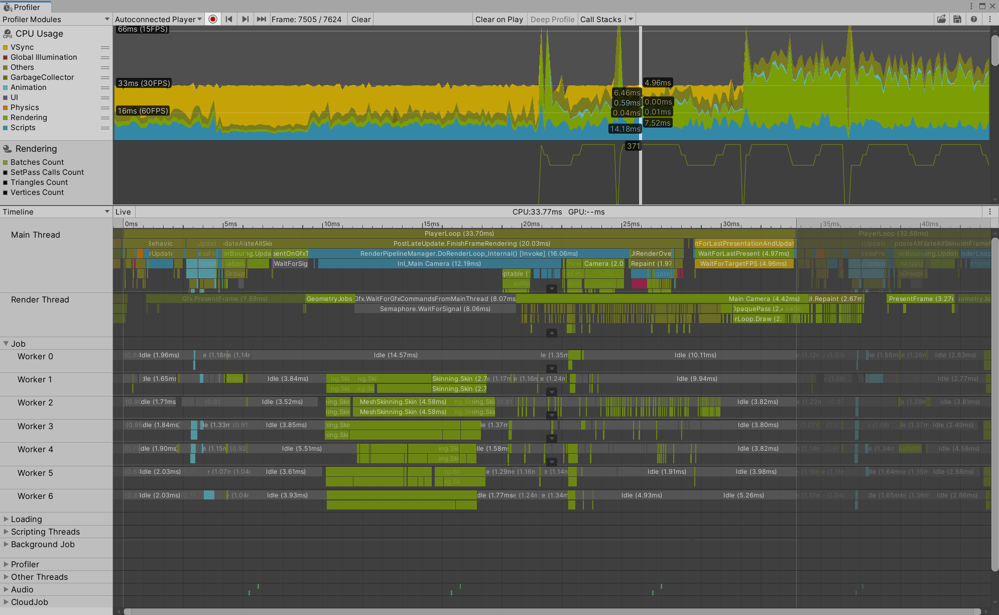
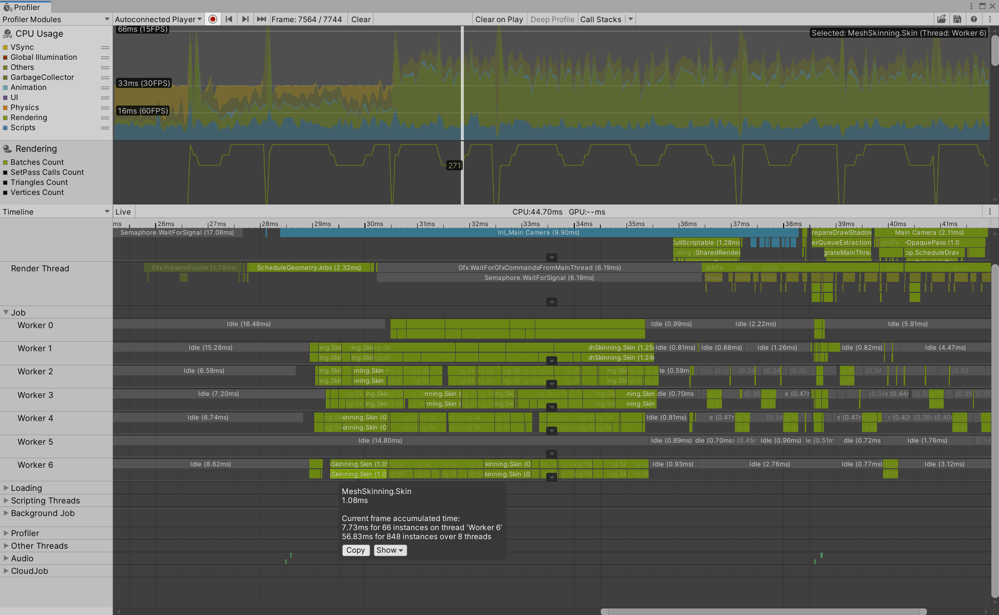
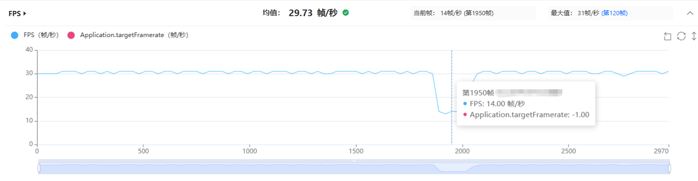
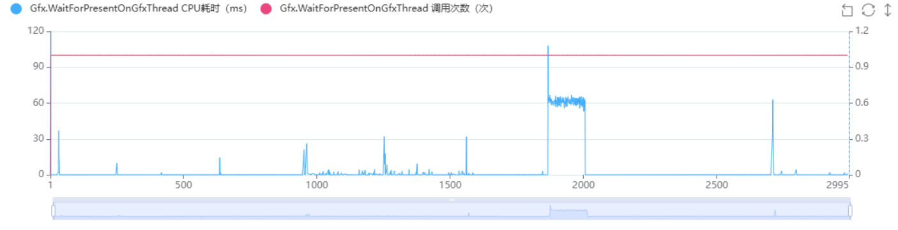
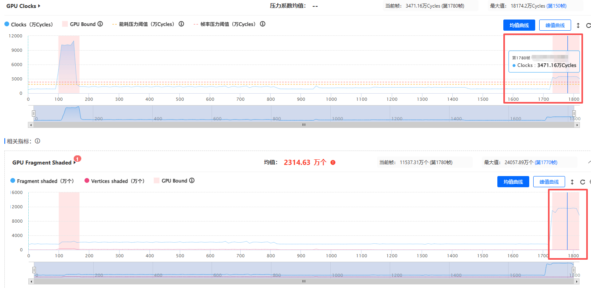
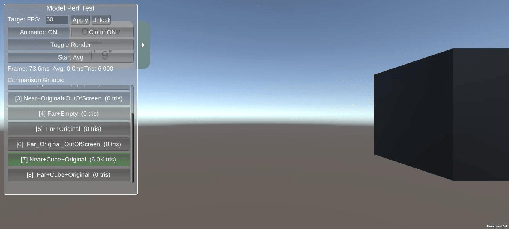

1）低模后，Render为何还是很高
2）同一个模型，为什么近距离测试帧率下降
实战案例一：切低模后 Render 线程耗时为何没降
Q：角色拉远切换低模后，Render线程耗时为什么没有明显下降？重新拉近后，为什么又出现MeshSkinning耗时升高的情况？
A： Render线程耗时升高，并不一定就是渲染压力过大。 很多情况下，看到Render线程占比较高，大家会优先去看模型复杂度、Shader或者GPU负载。但在实际项目中，Render线程也可能只是等待其他线程完成任务，并不代表自身执行了大量渲染工作。
这个项目中就遇到了类似情况，角色拉远后，会自动切换到低模，同时Shader复杂度也有所降低。按照正常预期，渲染开销应该有所下降，但实际测试中发现，切换低模后Render线程耗时并没有明显降低。

查看Profiler后可以看到，Render线程的耗时主要来自等待Job工作线程完成计算，而Job线程中的热点集中在MeshSkinning相关计算。

这里需要注意，并不是角色重新拉近后，单纯因为模型面数增加，导致MeshSkinning耗时升高。结合该项目业务逻辑可以看到，角色处于远距离状态时，项目侧会主动降低部分相关计算的更新频率，以减少性能消耗。当角色重新进入Near范围后，需要恢复这些计算，因此Job线程会出现一次明显的耗时峰值。
继续结合业务代码分析可以发现，Job线程热点集中在MeshSkinning相关计算，而这部分计算与衣物模拟相关逻辑存在关联，例如StartClothUpdate流程。
角色进入Near范围后，相关业务计算恢复更新，触发Skinning/变形相关Job执行，导致Job线程出现耗时峰值。而Render线程由于需要等待Job任务完成，最终表现为Render线程耗时升高。
因此，这里的问题并不是Render线程本身执行了过多渲染工作，而是等待其他线程任务完成导致的耗时增加。后续优化方向应该关注对应业务计算和更新策略，而不是单纯降低Render线程开销。
实战案例二：近距离帧率下降如何定位
Q：我们项目在测试过程中发现，模型处于远距离状态时帧率表现正常，但切换到近距离显示状态后，帧率出现明显下降。当前测试场景中，画面中看到的是一个Cube模型，但实际由多个模型叠加组成。在模型资源本身没有发生明显变化的情况下，如何确认这种情况下帧率下降的原因，以及应该如何进一步定位瓶颈？

A： 遇到这种情况时，不能只根据模型资源是否发生变化判断性能消耗，还需要结合运行时数据确认具体瓶颈。
从UWA GOT Online报告可以看到，Near+Cube+Original场景下持续出现：Gfx.WaitForPresentOnGfxThread耗时。

该函数通常表示CPU侧正在等待GPU完成当前帧相关工作，可能与GPU侧压力或同步等待有关，因此需要进一步结合GPU指标判断。
为了进一步确认GPU状态，我们使用支持GPU参数采集的OPPO R17设备进行了补测。由于Original材质在该设备测试过程中存在稳定闪退问题，无法直接采集对应GPU数据，因此采用Empty材质场景进行测试。
需要注意的是，出现Gfx.WaitForPresentOnGfxThread耗时的场景为Original材质，而GPU数据采集来自Empty材质，两者并非完全相同工况。Empty场景的数据可以辅助判断Near状态下存在较高GPU压力，但不能完全等同于Original场景的GPU表现。
测试结果显示，在Near+Cube+Empty场景下，GPU Clocks和Fragment Shaded指标均出现明显升高。

其中，Fragment Shaded明显增加，说明GPU需要处理更多像素相关计算。模型距离摄像机变化后，屏幕占比也会发生变化，即使模型资源本身没有变化，近距离状态下也可能因为覆盖更多屏幕区域导致Fragment计算量增加。

需要注意的是，虽然画面中看起来只是一个Cube，但实际测试场景中存在多个模型叠加的情况，因此不能只根据单个模型的外观判断实际渲染开销。如果当前GPU压力高于预期，还需要结合模型叠加数量、材质类型以及渲染方式进一步排查。例如半透明材质、多层覆盖等情况，可能导致Overdraw增加，从而进一步提升Fragment计算量。
在实际项目分析中，可以结合UWA GOT Online GPU模式下的热力图查看高消耗区域。